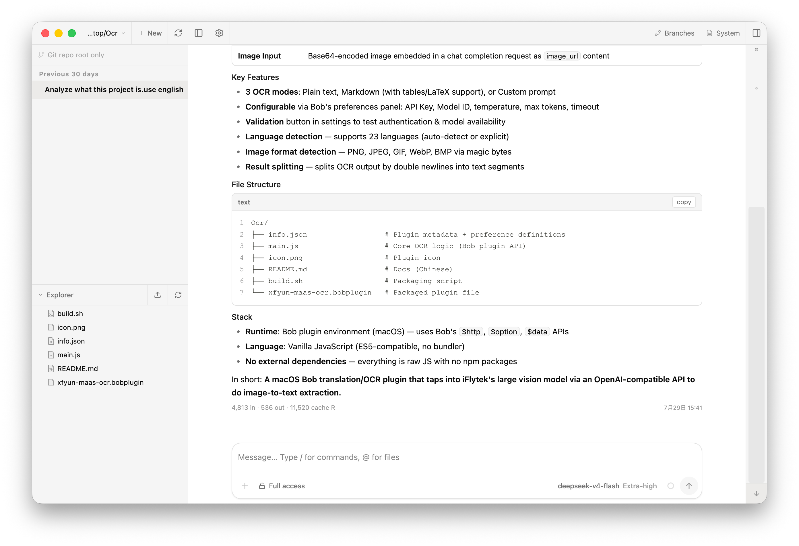
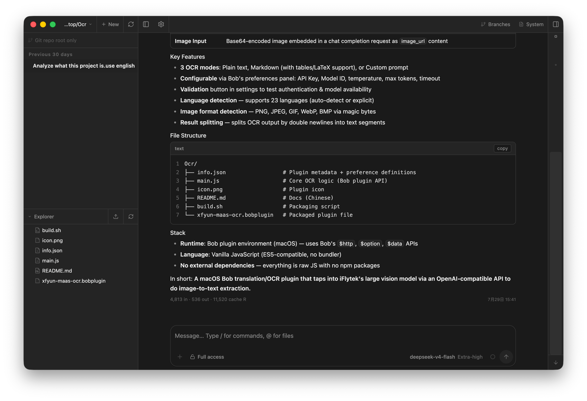

Chat, files, Git, and terminals
in one quiet workspace.
RainCode runs on your machine — desktop or browser.
The desktop client serves the UI over app:// and splits a
light agent runtime from a heavy one over IPC,
so session lists, files, and Git stay fast while the agent SDK warms.


Download the desktop app
Free & open source (MIT). Installers ship a bundled Node runtime.
Desktop UI is not a loopback web server — it uses app:// + IPC.
macOS builds are ad-hoc signed (Right-click → Open on first launch if needed).
All releases →
Three panes, zero noise
Everything in one place
One control for edit risk
app:// UI · dual IPC runtimes
Assets leave the agent process: the main process serves the Vite SPA over
app://pi, so SDK load cannot block rendering.
SDK-free routes (session list, files, git, settings chrome) stay on the
light runtime; chat, models, and live sessions go to
heavy. Same app/api handlers as the browser —
different transport. Details in
desktop-architecture.md.
Your data stays on your machine
~/.pi/agentDefault data root (PI_CODING_AGENT_DIR overrides)…/sessions/…/*.jsonlConversation history, one file per session…/models.jsonModel / provider config (editable in UI)…/pi-web.jsonSettings — roles, proxy, agent mode, UI, GPU…/project-memory/…Project-scoped memory facts (opt-in)…/cache/jitiDesktop runtime transpile cache
File browsing is scoped to session cwds, project roots, ~/pi-cwd-*,
and explicitly allowed roots. No login by default — the agent is high-privilege.
Desktop or browser
cd pi-web
npm install
npm run desktop:build && npm run electron # app:// + dual IPC
# or browser:
npm run dev # http://127.0.0.1:30141
127.0.0.1 by default.
Binding outside loopback exposes a high-privilege agent surface —
only do that on a network you trust.